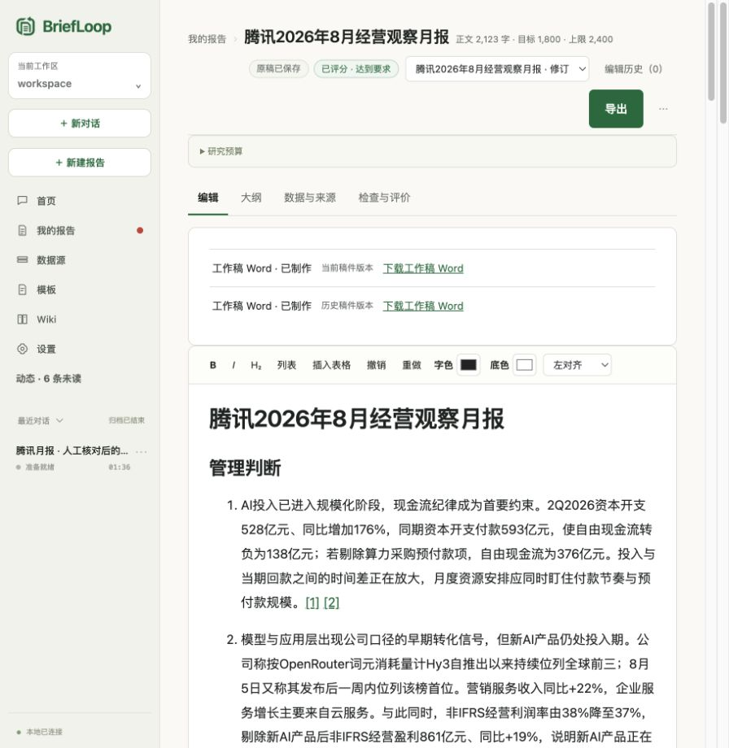

需求与材料
读者 · 目标 · 要求
- 上传文件
- 公开资料 · 已授权 MCP

工作区保存在本地，重要结论可追问依据，评分与写稿分开。云端模型和搜索仍会接收相关内容。
工作区与记录保存在本地；调用云端模型或搜索时，相关内容会发送给你选择的服务。关闭检索不等于停止模型外发。
重要结论挂到原文行、PDF 页、Excel 单元格与图像，不是一句「据我所知」。
评价与核查针对具体稿件版本；低分不隐藏工作稿。Reviewer 的只读隔离能力依宿主和发行版本而异。
交给它材料，拿回可修改、可追问依据的报告。
明确问题，带上资料。
找依据，形成初稿。
检查质量，核对来源。
保留修改，导出 Word。
需要时，再把反馈整理成下一次可用的经验。
正式交付不是「模型说写完了」，而是把结论钉回它来自的那一行原文、那一页 PDF、那一个单元格。

检索量与篇幅限制不等于完整费用上限。模型与搜索由你选择的服务计费，宿主自带搜索的计量能力不同。
为任务设置目标篇幅与上限。保留必要依据和待补信息，不为凑字数增加无关内容。
提供 Apple 芯片 Mac 与 Windows x64 安装包。需要兼容的 Python 3.11+ 和已认证的模型宿主；已有 Python 3.12 可以使用。
首次准备依赖需要联网。模型与搜索用量由所选提供方计费。工作区保存在本地，但使用云端服务时会发送相关内容。